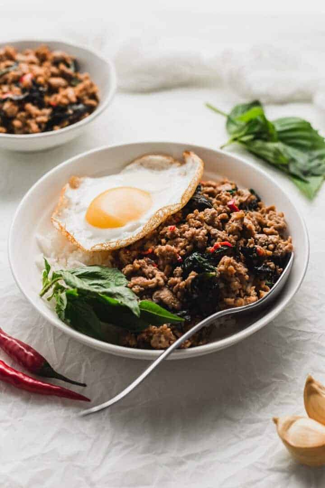

Thai Pork Basil (pad krao pao)

Description
Thai Pork Basil or pad kra pao is a staple thai dish
that you can easily make it home.This pad kra pao (pork & holy basil-stir-fry)
features a key ingredient: holy basil! With jasmine rice, it's perfection.
And it only takes minutes to make.
Ingredients
These ingredients are total relative to what you actually like. In Thailand, we often
use the term "use feeling" as the measurement. This gives a unique flavor vary but cooks.
Though, watch out for using too much of one ingredient.
- 3 tablespoons vegetable oil
- 2 shallots (thinly sliced)
- 7 cloves garlic (sliced)
- 3 Thai bird or holland chilies (de-seeded, if desired, and thinly sliced)
- 1 pound ground pork (450g)
- 1 teaspoon sugar
- 1 tablespoon fish sauce
- 1 tablespoon thin/light soy sauce
- 1 tablespoon msg rich soy sauce (green cap or maggie)
- 1 teaspoons dark soy sauce
- 2 teaspoons oyster sauce
- 1 teaspoons rice vinegar
- holy basil leaves (about 1 1/2 cups packed)
- optional: 1 egg
Instructions
- In a wok over medium high heat, add the oil, shallots and garlic, and fry for 3 minutes.
- Add the chilies and cook for another minute.
- Crank up the heat to high, and add the ground pork, breaking it up into small bits and allowing it to crisp up.
- Add the sugar, fish sauce, soy sauce,msg soy sauce, dark soy sauce, vinegar, and oyster sauce. Stir-fry for another minute and deglaze the pan with the broth or water. Because your pan is over high heat, the liquid should cook off very quickly.
- Add the basil, and stir-fry until wilted. Serve over rice.